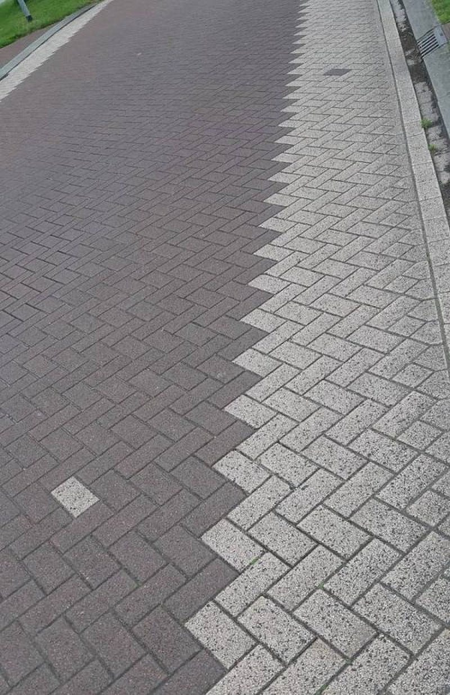

Conquering Dissonance: Error Handling Strategies with purrr

Stepping onto the stage of data analysis with the R programming language and the purrr package is like leading an orchestra as the conductor. While the harmonious performance of data manipulation under your control is deeply satisfying, there will be times when a note is off — an error occurs — causing dissonance in your data symphony. Recognizing this potential, we’ll venture off the beaten path of our ggplot2 series and tackle the challenge of conquering this dissonance: mastering error handling with purrr.
As with music, errors in data analysis are not necessarily failures. Instead, they are opportunities to understand your data better and fine-tune your approach. They indicate that your data is communicating something important, something unexpected, something that requires your attention as the conductor of this grand performance. This article aims to equip you with the strategies needed to address and conquer these dissonances, ensuring your data analysis performance remains harmonious and resonant. Stay tuned as we dive into the intriguing world of error handling with purrr!
Understanding the Concept of Errors in purrr
In the world of data analysis with R and purrr, errors are similar to the dissonant notes that unexpectedly appear in a symphony performance. Just as a skilled conductor swiftly notices and rectifies these off notes to maintain harmony, a data analyst should understand the nature of errors and know how to handle them effectively to keep the data manipulation process smooth and efficient.
Errors in R typically indicate that something has gone wrong during the execution of your code. They might arise due to various reasons, such as incompatible data types, incorrect function arguments, missing values, or unexpected data input. Just like a sudden cacophony in a musical performance can startle the audience, errors in your code can halt your analysis, making it essential to manage them effectively.
Errors in purrr often arise when we’re dealing with list-like structures using functions like map(), map_dbl(), map_int(), and others. Let’s consider an example:
library(purrr)
# List of numbers and a character string
mixed_list <- list(1, 2, “three”, 4)
# Attempt to calculate the square of each item in the list
squared <- map_dbl(mixed_list, ~ .²)
Error in `map_dbl()`:
ℹ In index: 3.
Caused by error in `.²`:
! non-numeric argument to binary operator
Run `rlang::last_trace()` to see where the error occurred.Executing this code results in an error because the function map_dbl() expects to work with numeric inputs, but encounters a character string in mixed_list. Understanding the nature of such errors is the first step towards conquering dissonance in our data manipulation performance. It allows us to anticipate potential issues and choose the right tools to address them, thereby ensuring a seamless and harmonious data analysis process.
Basic Error Handling in purrr
Just as an experienced conductor has several strategies to quickly correct off notes and regain harmony in a performance, purrr provides us with a set of tools to handle errors during our data manipulation process. Among these, safely(), quietly(), and possibly() functions are akin to the conductor’s baton, letting us orchestrate our way through the unexpected.
The function safely() transforms any function into a safe version that never throws an error, and instead returns a list with two elements: result (the original result if it exists) or error (the error message if there was an error). Let’s revisit our previous example, and this time, let’s make it ‘safe’.
library(purrr)
# List of numbers and a character string
mixed_list <- list(1, 2, “three”, 4)
# Safe version of squaring function
safe_square <- safely(function(x) x²)
# Apply safe_square to mixed_list
squared_safe <- map(mixed_list, safe_square)
# Inspect the result
squared_safe
[[1]]
[[1]]$result
[1] 1
[[1]]$error
NULL
[[2]]
[[2]]$result
[1] 4
[[2]]$error
NULL
[[3]]
[[3]]$result
NULL
[[3]]$error
<simpleError in x^2: non-numeric argument to binary operator>
[[4]]
[[4]]$result
[1] 16
[[4]]$error
NULLAs you can see, despite the presence of a character string in our list, our safe_square() function handled it smoothly without stopping the execution of the code.
On the other hand, quietly() is akin to a diligent maestro, who not only addresses the off-notes but also keeps a watchful eye for those instruments that might not be playing in tune. While it maintains the flow of execution like safely(), it captures not just the errors but also the warnings generated during the function execution. It returns a list with three components: result, output, and warnings.
library(purrr)
# Function that generates a warning
warning_function <- function(x) {
if (x < 0) {
warning(“Input is negative.”)
}
sqrt(x)
}
quiet_warning_function <- quietly(warning_function)
# Apply to a vector with both positive and negative numbers
results <- map(list(4, -1), quiet_warning_function)
# Inspect the results
results
[[1]]
[[1]]$result
[1] 2
[[1]]$output
[1] ""
[[1]]$warnings
character(0)
[[1]]$messages
character(0)
[[2]]
[[2]]$result
[1] NaN
[[2]]$output
[1] ""
[[2]]$warnings
[1] "Input is negative." "NaNs produced"
[[2]]$messages
character(0)You might notice that quietly() provides a richer output compared to safely(), offering more detailed insights into what’s happening behind the scenes during the function execution.
Finally, imagine a maestro who, upon encountering a missed note, improvises and fills in the gap with a suitable substitute. This is what possibly() does. It’s a simplified version of safely(), but instead of providing a detailed error message, it lets you specify a default value that should be returned in the event of an error.
library(purrr)
# List of numbers and a character string
mixed_list <- list(1, 2, “three”, 4)
# possibly version of squaring function
possible_square <- possibly(function(x) x², otherwise = NA)
# Apply possible_square to mixed_list
squared_possible <- map(mixed_list, possible_square)
# Inspect the result
squared_possible
[[1]]
[1] 1
[[2]]
[1] 4
[[3]]
[1] NA
[[4]]
[1] 16In this code snippet, whenever our function encounters an error, it replaces it with NA. Thus, possibly() allows you to maintain the rhythm of your data analysis, providing a substitute for dissonant notes and keeping your symphony in flow.
These functions — safely(), quietly(), and possibly()—are your baton, your tools to address the discord in your data manipulation performance, helping you regain and maintain the harmony while working with purrr. They are your first line of defense against errors, allowing you to carry on with your analytical flow while ensuring the valuable information hidden in these errors is not lost.
Combining Error Handling with Mapping Functions
Once armed with the basic strategies of error handling, we can combine them with the core feature of purrr: mapping functions. Think of it as our conductor blending different sections of the orchestra, creating a balanced, unified symphony.
Mapping functions, such as map(), map2(), and pmap(), pair beautifully with safely(), quietly(), and possibly(), to handle any dissonance in our data manipulation performance. Let’s see how this plays out with a practical example using map() and safely().
Imagine we have a list of numbers, some of which are not numbers but character strings. We aim to perform a square root operation on each element of the list. Here, our symphony is in danger of dissonance as taking the square root of a character string is undefined and will result in an error.
# List of numbers
numbers <- list(4, "a", 9)
# Define safe square root function
safe_sqrt <- safely(sqrt)
# Use map() to perform safe square root operation
results <- map(numbers, safe_sqrt)
# Inspect the results
results
[[1]]
[[1]]$result
[1] 2
[[1]]$error
NULL
[[2]]
[[2]]$result
NULL
[[2]]$error
<simpleError in .Primitive("sqrt")(x): non-numeric argument to mathematical function>
[[3]]
[[3]]$result
[1] 3
[[3]]$error
NULLIn this case, attempting to take the square root of “a” triggers an error. However, our safe square root function, safe_sqrt, steps in as a competent conductor. It handles this dissonant note, allowing the symphony to flow smoothly without interruption.
This integration of error handling with mapping functions is the powerful feature of purrr that allows us to maintain the rhythm of our data analysis, dealing with each element individually. It’s as if each musician in our data orchestra has a dedicated conductor, ensuring that a wrong note from one does not disrupt the entire performance. Understanding this harmonious blend of error handling and mapping functions is a crucial aspect of mastering purrr.
Handling Errors in List-Column Data Frames
As our data symphony evolves, we might find ourselves orchestrating an intricate dance with a type of data structure that is unique to the tidyverse: list-column data frames. These are data frames in which one or more columns are lists of data rather than simple atomic vectors. It’s like each cell in these columns can hold a melody of its own, instead of just a single note. And while they present unique opportunities for complex analyses, they may also strike unexpected dissonant chords when operations on list-columns encounter errors.
Suppose we have a list-column data frame and we are attempting an operation on each element in the list column. Our performance may falter if an element in the list is not compatible with the operation. Let’s illuminate this with an example using map() and mutate() from the dplyr package.
library(tidyverse)
# Create a list-column data frame
df <- tibble(
x = 1:3,
y = list(1:5, “a”, list(10, 20, 30))
)
# Attempt to take the square root of each list element in ‘y’
df %>%
mutate(sqrt_y = map(y, sqrt))
Error in `mutate()`:
ℹ In argument: `sqrt_y = map(y, sqrt)`.
Caused by error in `map()`:
ℹ In index: 2.
Caused by error:
! non-numeric argument to mathematical function
Run `rlang::last_trace()` to see where the error occurred.
# Safe way
safe_sqrt <- safely(sqrt)
new_df <- df %>%
mutate(sqrt_y = map(y, safe_sqrt))
new_df$sqrt_y
[[1]]
[[1]]$result
[1] 1.000000 1.414214 1.732051 2.000000 2.236068
[[1]]$error
NULL
[[2]]
[[2]]$result
NULL
[[2]]$error
<simpleError in .Primitive(“sqrt”)(x): non-numeric argument to mathematical function>
[[3]]
[[3]]$result
NULL
[[3]]$error
<simpleError in .Primitive(“sqrt”)(x): non-numeric argument to mathematical function>Here, we attempt to add a new column sqrt_y that contains the square root of each element in the y column. The operation smoothly takes the square root of the first element, which is a numeric vector. However, it hits a snag with the second element, which is a character string (“a”). Trying to calculate the square root of a character string is undefined, resulting in an error.
This scenario illustrates the unique challenges that can arise when working with list-column data frames. But fear not, purrr’s error handling functions are ready to step in and keep the music playing. By understanding how to handle such errors, we can maintain our symphony’s harmony, even when our data structures become more complex.
Using Predicate Functions for Error Management
Predicate functions are a unique piece in our R orchestra. These functions, named so because they answer a “yes” or “no” question, return a Boolean (TRUE or FALSE) value. They might not play the melody, but they provide the rhythm that keeps the performance together, ensuring we hit the right notes and avoid any dissonance. In the context of error management, predicate functions can play an essential role by preventing potential errors before they occur.
Let’s consider a scenario where we are using the map() function to apply an operation to each element of a list. But, there’s a catch. This operation is only valid for elements of a specific type. For instance, suppose we want to extract the first element from each list within a list, but not all elements of our list are lists themselves. This is where predicate functions step in.
We can use the is.list() predicate function to check if each element is a list before attempting to extract its first element. This prevents the operation from being applied to incompatible elements, thus avoiding an error.
# A list of mixed types
mixed_list <- list(list(1, 2, 3), “a”, list(4, 5, 6))
# Extract first element of each sublist, if it is a list
result <- map_if(mixed_list, is.list, ~ .x[[1]])
result
[[1]]
[1] 1
[[2]]
[1] "a"
[[3]]
[1] 4Here, map_if() applies the operation .x[[1]] (extract the first element) to each element of mixed_list that passes the is.list() predicate function, i.e., each element that is a list. For elements that are not lists, the operation is not applied, and the original element is preserved. This way, we’ve prevented potential errors by ensuring the operation is only applied when it’s appropriate.
Thus, with the rhythm set by predicate functions, we ensure that our data performance stays in harmony, enhancing the robustness of our analysis and providing us with a powerful tool for preemptive error management.
Error Debugging in purrr
In our symphony of data analysis, even with the best intentions, sometimes dissonance is unavoidable. When we encounter errors, the best approach is not to shy away but to take a moment and listen to what they’re trying to tell us. Errors are not simply roadblocks but messages from R, guiding us towards the source of the issue. Debugging is this process of understanding and addressing errors, and purrr, together with R’s built-in tools, gives us the means to do it gracefully.
When we encounter an error while using a purrr function, it’s generally not the function itself that’s causing the problem. More often than not, it’s the function we’re applying to each element of our list or data frame that’s hitting a snag. This means that our focus should be on understanding the error message and identifying the problematic input.
One straightforward approach to this is by using the safely() function, which we discussed earlier. safely() can be used to create a safe version of a function, which will return a list with two elements, result and error, instead of stopping execution when an error is encountered. The error element can provide valuable insights into what went wrong.
# Define a function that could fail
my_function <- function(x) {
if (x < 0) {
stop(“x must be non-negative”)
}
sqrt(x)
}
# Create a safe version of the function
safe_my_function <- safely(my_function)
# Use the safe version on problematic input
result <- safe_my_function(-1)
# Inspect the error
result$error
<simpleError in .f(…): x must be non-negative>In the example above, result$error will give us the error message from our function, telling us that “x must be non-negative”. By isolating and understanding the error, we can make adjustments to our input or function, ensuring a smooth performance.
In the finale of our error handling symphony, we learn that debugging is not a stumbling block but an encore in our data analysis performance. By understanding the error messages and using the right tools, we can conquer dissonance, turning our data analysis into a harmonious masterpiece.
As our symphony draws to a close, we reflect on our journey through the harmonious realm of error handling in purrr. From understanding the nature of errors, through the usage of basic error handling functions, and into the depth of managing complex list-column data frames, we’ve learned how to conduct our data analysis performance smoothly, even in the face of potential dissonance.
We’ve also realized the rhythm that predicate functions provide to our data performance, guiding us through the process and keeping us from faltering. Lastly, we understood that errors are not the end but an opportunity for an encore, a chance to improve our performance with careful debugging.
Mastering the art of error handling in purrr allows us to maintain the harmony of our data analysis, making our performance robust and reliable. It’s a skill that might seem daunting at first, but with practice and patience, it becomes an integral part of our conductor’s toolkit.
Like a seasoned conductor, our journey doesn’t end here. There are more notes to explore, more melodies to play, and more symphonies to create. The world of purrr and the larger Tidyverse is rich and deep, and there’s always more to learn. So, keep practicing, keep exploring, and keep making beautiful music with your data.
In our upcoming posts, we will continue to dive deeper into the Tidyverse, exploring new packages and strategies to make our data symphony even more harmonious. Stay tuned for more, and until then, happy coding!